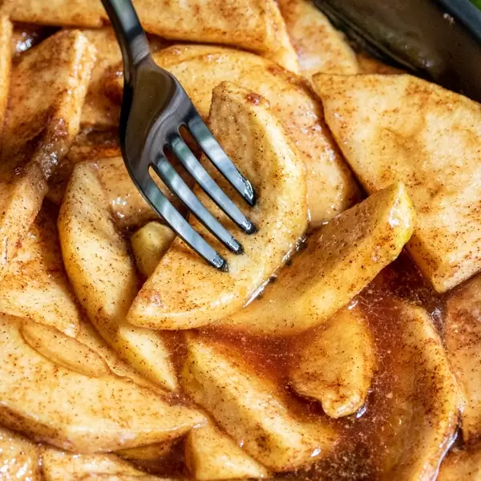

Cinnamon Sugar Baked Apple Slices

A warm and sweet dessert to welcome the fall weather!
A simple side of apples baked in cinnamon sugar. Serve as a dessert or as a side dish!
Ingredients
2 Granny Smith apples
1/4 cup brown sugar
1/4 cup white sugar
1 teaspoon cinnamon
1/4 teaspoon salt
2 tablespoons butter
Steps
Preheat oven to 350
°
F.
Peel and core apples and cut into thin slices.
Mix brown sugar, white sugar, cinnamon, and salt together in large bowl.
Add apple slices to bowl, cover the top, and shake until slices are thoroughly covered.
Grease a 9-inch round baking dish.
Layer apple slices in baking dish, one slightly on top of the other, until dish is completely filled.
Scatter pats of butter across the top of the apples.
Bake for 25-30 minutes or until apples are tender.